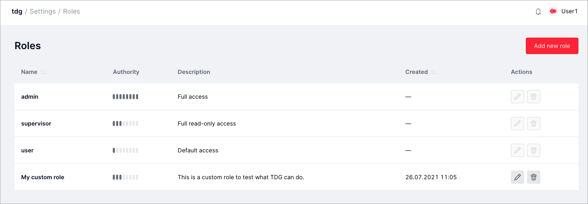

Role-based access control¶
Tarantool Data Grid has a role-based model of access to system functions and data stored in the system. The administrator sets data access permissions via UI or external tools (LDAP). Each role has a set of permissions that determine what users or external applications with that role can access and change.
You can find the list of roles on the Settings > Roles tab:
Default roles¶
There are three default roles that you can assign to users and external applications for authorized access and actions in the system:
- admin
- supervisor
- user.
The default roles have a predefined set of permissions, and they cannot be edited or deleted.
| Role | Authority | Data access |
|---|---|---|
| admin | Full access to TDG functions | Read and write access for all aggregates |
| supervisor | Full read-only access to TDG functions | Read access for all aggregates |
| user | Default access: has access to the Test tab to send test objects, the Repair Queues tab, the Tasks tab, and the GraphQL tab. | None |
Adding new user roles via UI¶
You can create new user roles based on the default roles or the roles you’ve already created.
To create a new user role:
- Switch to the Settings > Roles tab and click Add new role.
- In the New role dialog, set the following parameters:
Name: the name of the new role.Description: an optional description of the new role.Roles: an optional selection of the existing role on the basis of which the new role will be created.
- In the list of actions, select the actions that will be available to the new user role. Don’t forget to check whether the role allows access to the interface page. For example, if you allow the new role to make GraphQL queries, make sure to check the box Pages Access > Show GraphQL page in the list of actions.
- Click Add new role.
After you’ve created a new user role, you can edit or delete it any time.